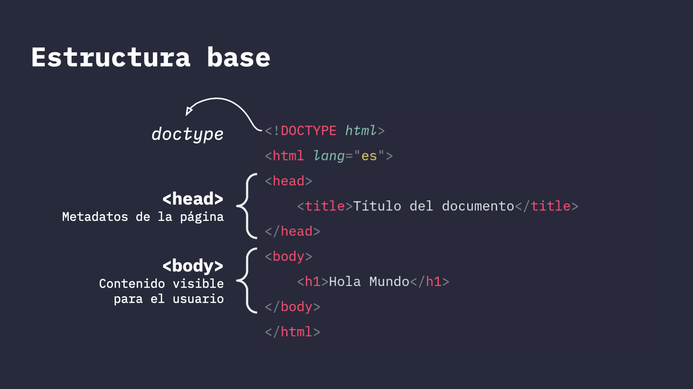

Clase 2: HTML
Estructura base
Recomendaciones de escritura
- Cuida siempre la indentación (Niveles de márgenes de acuerdo a la anidación de etiquetas)
- Prefiere minúsculas para etiquetas y atributos
- Prefiere comillas dobles para atributos
- Cierra las etiquetas
- Evita generar líneas demasiado largas
- Elimina espacios blancos innecesarios. Utlizar comentarios
Recomendaciones para nombres de archivos y carpetas
- Prefiere minúsculas
- Utiliza sólo letras, números y guiones. Evita usar caracteres inusuales, tildes, símbolos, comillas, etc
- Utiliza guiones para separar palabras. Evita siempre usar espacios
- Definir nombres cortos y relevantes, junto con una convención de nombres
Links
Cómo referenciar archivos Acercamiento a urls y rutas
Validador código: https://validator.w3.org/#validate_by_input
Bitácora personal: https://classroom.github.com/a/hdQWjnb0